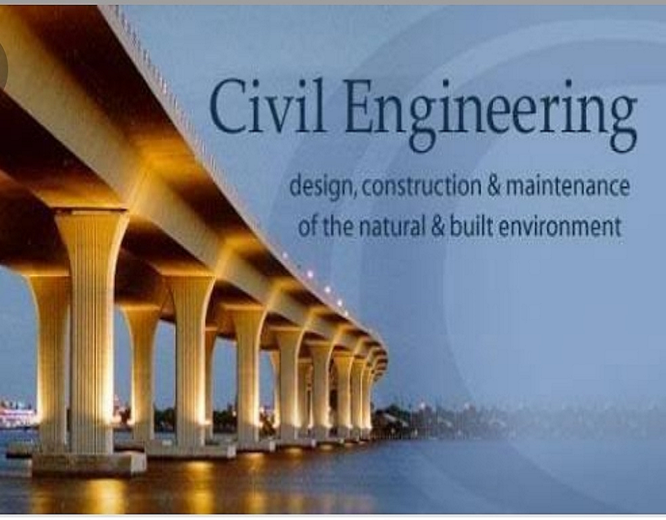

✨ Civil Engineering ✨


About the Department
The Civil Engineering Department was established in 1990 and started functioning under Government Polytechnic when the Institute was established.
Intake for Regular: 60 students
Departmental Staff:
- Captain Dr. N.P. Sonaje
- Shri H.T. Tatale
- Dr. K.R. Kumbhojkar
- Shri B.B. Ladge
- Shri A.Y. Mestri
Head Of Department: Shri H.T. Tatale
Laboratories:
- Survey Lab
- CT Lab
- Hydraulics Lab
- APM Lab
Objective of the Course
Civil Engineering is a professional engineering discipline that deals with the design, construction, and maintenance of the physical and naturally built environment. This includes public works such as roads, bridges, canals, dams, airports, sewerage systems, pipelines, structural components of buildings, and railways.